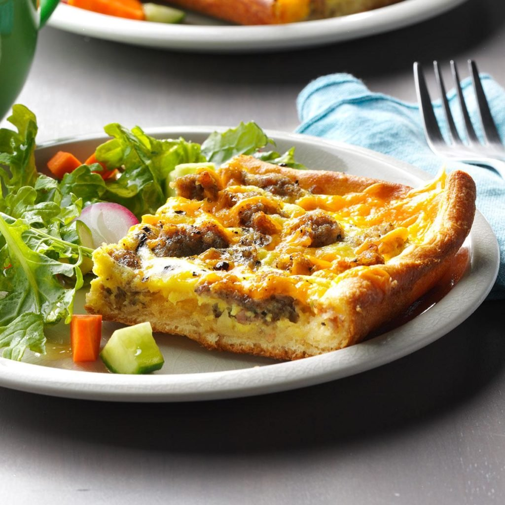

Brunch Pizza Squares
Ingredients
1 pound bulk pork sausage
1 tube (8 ounces) refrigerated crescent rolls
4 large eggs
2 tablespoons 2% milk
1/8 teaspoon pepper
3/4 cup shredded cheddar cheese
Directions
- In a large skillet, crumble sausage and cook over medium heat until no longer pink; drain. Unroll crescent dough onto the bottom and 1/2 in. up the sides of a lightly greased 13x9-in. baking pan; seal seams. Sprinkle with sausage.
- In a large bowl, beat the eggs, milk and pepper; pour over sausage. Sprinkle with cheese.
- Bake, uncovered, at 400° until a knife inserted in the center comes out clean, about 15 minutes.
Nutrition Facts
1 piece: 320 calories, 23g fat (7g saturated fat), 134mg cholesterol, 664mg sodium, 14g carbohydrate (3g sugars, 0 fiber), 14g protein.
Total Time
Prep/Total Time: 30 min.